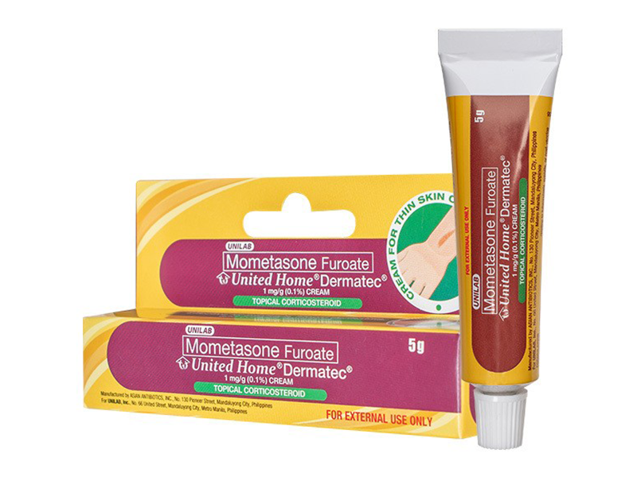
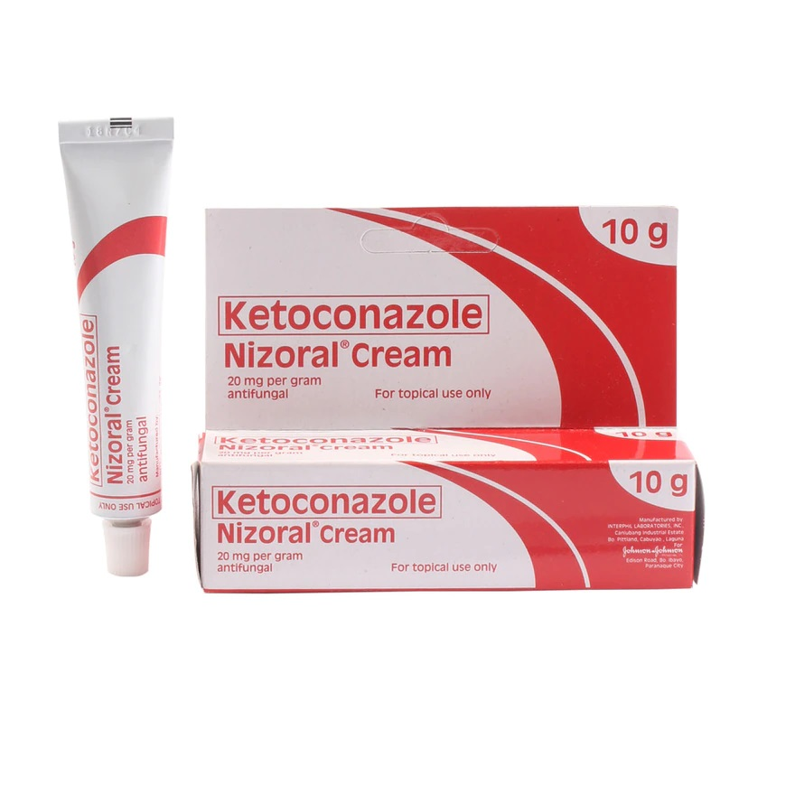

Medicine Guide For Skin Issue

UNITED HOME-DERMATEC
Description
Mometasone furoate belongs to a group of medicines called topical corticosteroids, which are used on the skin to relieve inflammation (e.g., swelling, redness) and itch caused by certain skin problems. Mometasone furoate cream and ointment are classified as medium potency topical corticosteroids.Guide
Directions for Use: Rub a thin layer of mometasone cream or ointment to affected areas of the skin once a day, or as directed by a doctor. Do not use on the face for longer than 5 days. Do not use for longer than 5 days in children, unless directed by a doctor.
MOMETASONE-MOMECORT
Description
Mometasone furoate belongs to a group of medicines called topical corticosteroids, which are used on the skin to relieve inflammation (e.g., swelling, redness) and itch caused by certain skin problems. Mometasone furoate cream and ointment are classified as medium potency topical corticosteroids.Guide
Directions for Use: Rub a thin layer of mometasone cream or ointment to affected areas of the skin once a day, or as directed by a doctor. Do not use on the face for longer than 5 days. Do not use for longer than 5 days in children, unless directed by a doctor.

1. Wash and dry the infected area of skin. If you're treating your feet, make sure you dry between your toes.
2. Use your own towel or flannel. This stops you passing the infection on to anyone else.
3. Gently rub the cream into the infected area and surrounding skin. You'll usually need a small amount, depending on the size of the area you're treating. Be careful not to let the cream get into your eyes or mouth. If it does get into your eyes or mouth, rinse them with water.
4. Wash your hands afterwards. This stops you spreading the infection to other parts of your body or other people.
If you're using any other creams, ointments or lotions on the same area of skin, do not put them on at the same time as ketoconazole cream. After putting on the ketoconazole cream, wait 30 minutes before you use different products on the same area. This gives the ketoconazole time to be absorbed into your skin.
KETOCONAZOLE-NIZORAL
Description
Ketoconazole shampoo is an antifungal medication. It treats fungal or yeast infections in your skin. You can use this medicated shampoo as you would use a regular shampoo by massaging it into your skin. Follow the label for directions on how long you should let the product set before rinsing it off.Guide
How to use ketoconazole cream1. Wash and dry the infected area of skin. If you're treating your feet, make sure you dry between your toes.
2. Use your own towel or flannel. This stops you passing the infection on to anyone else.
3. Gently rub the cream into the infected area and surrounding skin. You'll usually need a small amount, depending on the size of the area you're treating. Be careful not to let the cream get into your eyes or mouth. If it does get into your eyes or mouth, rinse them with water.
4. Wash your hands afterwards. This stops you spreading the infection to other parts of your body or other people.
If you're using any other creams, ointments or lotions on the same area of skin, do not put them on at the same time as ketoconazole cream. After putting on the ketoconazole cream, wait 30 minutes before you use different products on the same area. This gives the ketoconazole time to be absorbed into your skin.

CLOTRIMAZOLE-CANESTEN
Description
Known as alipunga, athlete's foot is a fungal skin infection caused by fungi that thrive in warm and moist environments like changing rooms, showers and public pools. Walking barefoot in these places puts you at greater risk. Athlete’s foot usually occurs between your toes, but it can also affect the soles and sides of your feet.Guide
Apply the cream thinly to the affected area and smooth in gently. Repeat 2-3 times a day for up to 3 or 4 weeks to kill the root of the infection. The length of treatment may vary depending on the kind of infection you have.❕Don’t forget❕
Even if your symptoms seem to be clearing up, you should complete the full course of treatment to ensure the infection is treated.
MUPIROCIN-BACTIFREE
Description
Mupirocin-Bactifree is a topical antibiotic ointment that treats and prevents bacterial skin infections. It contains mupirocin, which is an antibacterial that kills bacteria or stops them from growing.Guide
This medication is for external use only. Do not take by mouth. Wash your hands before and after use. If you are treating a hand infection, only wash your hands before use. Do not get it in your eyes. If you do, rinse your eyes with plenty of cool tap water. Use it as directed on the prescription label at the same time every day. Do not use it more often than directed. Use the medication for the full course as directed by your care team, even if you think you are better. Do not stop using it unless your care team tells you to stop it early.Apply a thin film of the medication to the affected area. You can cover the area with a sterile gauze dressing (bandage). Do not use an airtight bandage (such as a plastic-covered bandage).
Talk to your care team about the use of this medication in children. While it may be prescribed for children for selected conditions, precautions do apply.
Overdosage: If you think you have taken too much of this medicine contact a poison control center or emergency room at once.
NOTE: This medicine is only for you. Do not share this medicine with others.
CELETEQUE
Description
Céleteque's DermoScience technology makes use only of derma-grade ingredients and co-created with dermatologists necessary to promote overall skin health. Merged with Unilab's medical expertise and dermatological advances comes a line of products that are clinically tested to deliver results.Guide
Apply Céleteque® DermoScience™ Hydration Facial Wash on wet skin. Massage in a gentle circular motion. Rinse thoroughly. Use as often as needed.SKINEVER
Description
Improves skin oil, deeply purifies and shrinks pores, soothes acne skin, at the same time evenly brightens skin, replenishes skin moisture, and restores skin to its original appearance .Guide
HOW TO USE1. Apply it on wet face, gently massage it in a circular motion, rub it on your face for about 2 minutes, and then rinse thoroughly with warm water. Follow with the hydrating step.
2. Use twice weekly.
LACTEZIN
Description
Lactezin is a clinically-tested over-the-counter drug, which uses a natural antibacterial active ingredient Lactoferrin combined with Vitamin E and Zinc to help lessen pimples and give clear skin in as early as 2 weeks.It is the first over-the-counter drug registered anti-acne treatment in the Philippines.
Acne Problems? Watch Dra. Katrina Luz talk about how you can help treat acne by fighting the causes of skin problems from within.
Guide
It is recommended that you take 1 capsule of Lactezin, twice a day, one in the morning and one at night. It will take at least 2 weeks to see results. Based on clinical studies, best results are seen in 8 to 12 weeks. To possibly prevent recurrence, continue to take 2 capsules daily for maintenance.PYNOCARE
Description
PYNOCARE is a natural depigmentation capsule. Its advanced formula, containing plant and seaweed extracts, provides robust antioxidant and anti-inflammatory properties.Guide
It improves skin smoothness and elasticity while protecting it from the harmful effects of environmental stress. Take 1-2 capsules daily after a meal, or as prescribed by a physician. Not to be used in persons with known hypersensitivity and intolerance to any of the components.